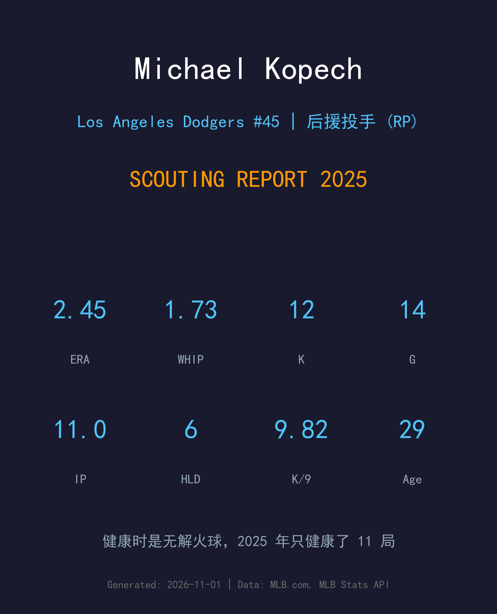
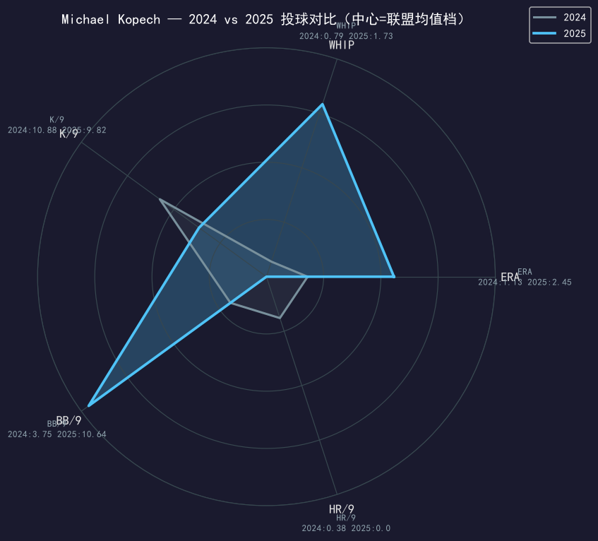
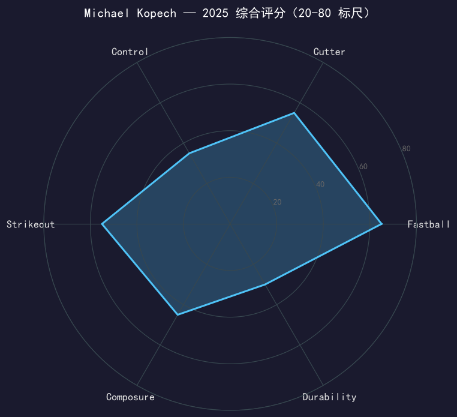

Los Angeles Dodgers #45 | 后援投手 | 右投 | 健康时是无解火球，2025 年只健康了 11 局

Michael Kopech 的 2025 年可以浓缩成一句话：他的投球内容配得上一份大合约，他的身体没有给他投出这份合约的机会。开季就因右肩撞击缺席，6 月底右膝炎症又把他送进 60 天伤兵名单，9 月短暂回归后再度触礁——全年只投了 11 局。
但那 11 局里藏着的东西依然诱人：自责分率 2.45、零全垒打，更惊人的是 6 次中继成功——平均每不到两局就 hold 住一场领先，教练组对他的信任度一目了然。代价是 WHIP 1.73：6 支安打配 13 次保送，他的 97.4 mph 四缝线依旧让打者望球兴叹，也让接手接得辛苦。
从 2025 年 11 月的视角看，Kopech 是这个休赛期最有意思的赌局之一：2024 年交易截止日来到道奇后他投出 1.13/0.79 的怪物数据，2025 年健康时依然是无解火球，但两年加起来只有 35 局。11 月 2 日他选择成为自由球员——健康的大物火球手，永远是市场上最稀缺的商品。
8 月 21 日在芝加哥白袜登上大联盟，从 2014 年首轮秀（第 33 顺位）兑现天赋的第一步；当时的他是棒球界最受瞩目的右臂之一。
交易截止日从白袜转投道奇后投出 24 场、自责分率 1.13、WHIP 0.79、6/6 救援成功——从白袜的先发转型为冠军队牛棚的无价拼图，是他生涯的第一次巅峰。
全年仅 11 局却留下 6 次中继成功：每一次健康登板都换来一场领先被守住——这是 2024 年怪物数据的延续，只是样本被伤病切得支离破碎。

| 赛季 | G | W-L | ERA | WHIP | IP | SO | BB | K/9 | BB/9 |
|---|---|---|---|---|---|---|---|---|---|
| 2024（交易后道奇段） | 24 | 4-0 | 1.13 | 0.79 | 24.0 | 29 | 10 | 10.88 | 3.75 |
| 2025 | 14 | 0-0 | 2.45 | 1.73 | 11.0 | 12 | 13 | 9.82 | 10.64 |
对比图里最刺眼的是 BB/9：3.75 到 10.64。但请注意 2025 的构造：13 次保送之外只有 6 支安打、零全垒打——打者不是打到他，而是「被保送后再被他三振或打出软弱球」。这是带伤投球的典型形状：出手点和下肢发力的不稳定让精确进垒变得困难，但 97.4 mph 的球速仍然让任何一颗进了好球带的球都难以被处理。健康季的他（2024 年 BB/9 3.75）才是真实水平。
2025 赛季真实配球数据（MLB Stats API pitchArsenal）：
超过八成的极端集中度——他不打算跟你玩配球，就是一颗火球砸进好球带。均速 97.4 配上他独特的出手角度，是他全部价值的来源。
细小横移的辅助球种，用来破坏棒头、对付粘球型打者；速差 6 mph 的减法配球简洁有效。
近乎弃用的第三球种——他的字典里基本没有「变速」，这也是左右打者通吃型火球手的底气与局限。
Kopech 的两段道奇数据放在一起看：35 局、自责分率 1.58、WHIP 1.08、每 1.6 局一次中继或救援成功。当他站在投手板上，他是道奇这两年最可靠的高杠杆右投——问题从来只是「他能站多久」。2025 年的肩（开季）与膝（赛季中后段）是两处不同部位的伤病，性质不同但结果相同：市场必须为他的健康打折，而所有需要后援的球队都知道打折后的他仍然超值。
在现代棒球里，82.7% 的单球种使用率几乎是行为艺术。Kopech 的逻辑很直白：当一颗 97.4 mph 的直球有独特的尾劲与进垒角度时，第二颗球种的存在只是为了「不让你赌直球」。这套哲学在 2024 年交出了 0.79 的 WHIP 证明有效；2025 年保送飙升则说明它的前提——直球要能持续进好球带——有多么脆弱。他的未来取决于「直球率+控球」这个二元函数，而非球种开发。
11 月 2 日他选择跳出合同成为自由球员——这一步棋在健康年份是争取长约，在 2025 年则是把自己的命运交回市场：29 岁、连续两年高杠杆成功样本、两处可修复伤病。对买家来说，这是一张「刮开一半、已见两个中奖图样」的彩票；对他自己来说，这是生涯第一次真正意义上为自己定价。

健康的他是 A 级，健康本身是问号
B- 级 / 高杠杆右投（健康变量）
道奇 2025 季后赛夺冠之路：外卡 2-0 红人 → NLDS 3-1 费城人 → NLCS 4-0 酿酒人 → 世界大赛 4-3 多伦多蓝鸟。
Kopech 没有出现在这条路上——右膝炎症在 9 月 19 日再度发作，为他的赛季画上休止符；9 月 29 日的「激活」只是名单上的形式，他没有在十月登板过一次。这是他 2025 年最大的遗憾，也是道奇夺冠拼图里缺了的那一角。
Kopech 的 2026 年取决于哪支球队愿意为他的健康买单。短约 + 激励条款是最可能的形态：他需要一座牛棚来重新证明自己能连投三个月，而买家需要的是一颗 97 mph 的火球来填第八局。这是一笔双方都有动力成交的生意。
理想剧本：完全健康季，成为新东家的固定第八局
现实基准：间歇性登板的高杠杆右投，出赛 40 场左右
上行惊喜：复制 2024 形态，进入终结者市场
Michael Kopech 来自得克萨斯州长景，2014 年选秀首轮第 33 顺位被波士顿红袜选中——那时他的快速球已经是选秀报告里的传说。2016 年他被交易到芝加哥白袜（Chris Sale 大交易的一部分），2018 年 8 月 21 日登上大联盟，却在同月接受了手肘韧带重建手术，错过了接下来的整个 2019 赛季。
白袜时代的他先后尝试了先发与牛棚：2022 年 25 场先发自责分率 3.54，2023 年却跌到 5.43；2024 年回到牛棚交出 9 次救援，但整体 4.74 的自责分率已让白袜失去耐心。2024 年交易截止日，道奇用一个不大的代价得到了他——然后他用 24 场 1.13 的怪物数据让整个棒球界重新审视这笔交易。
2025 年 11 月的 Michael Kopech 是一名自由球员。他的生涯弧线由「天赋」与「健康」两条线交织而成：天赋让他两次站在巅峰门口，健康决定他这次能走进去多久。这一次，至少命运的方向盘回到了他自己手里。